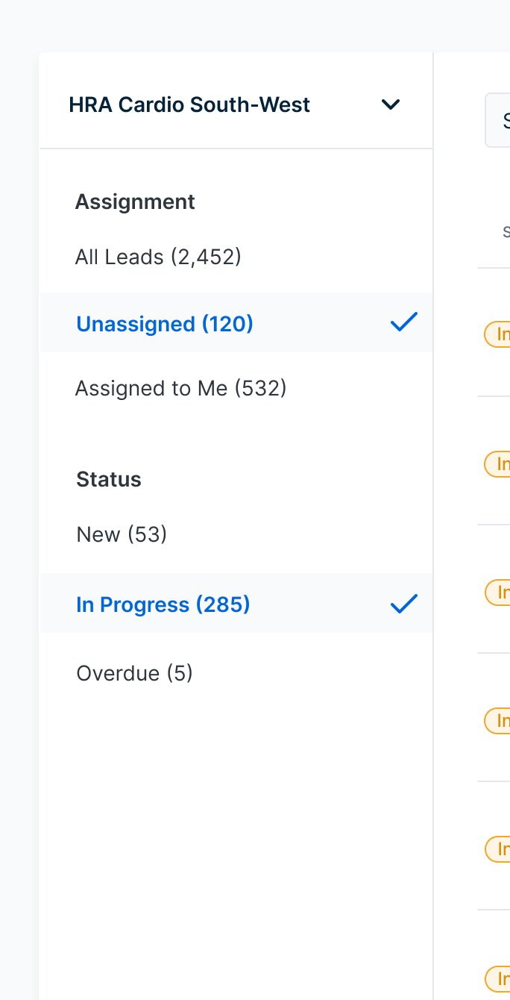
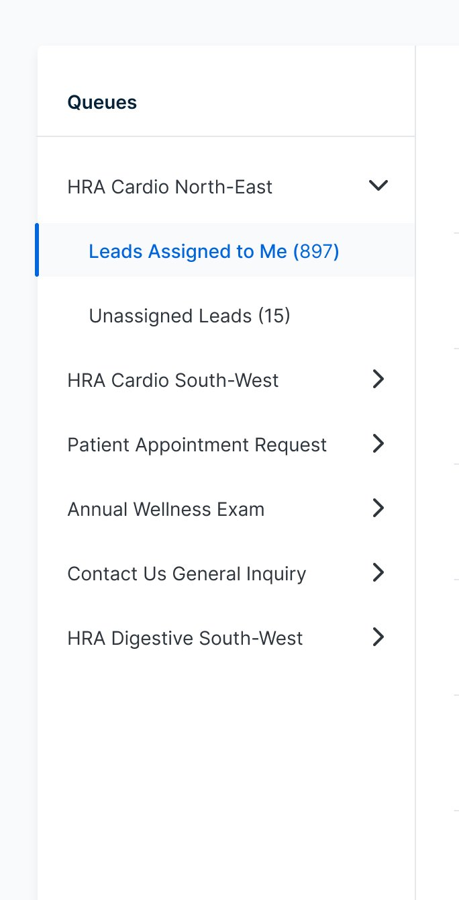
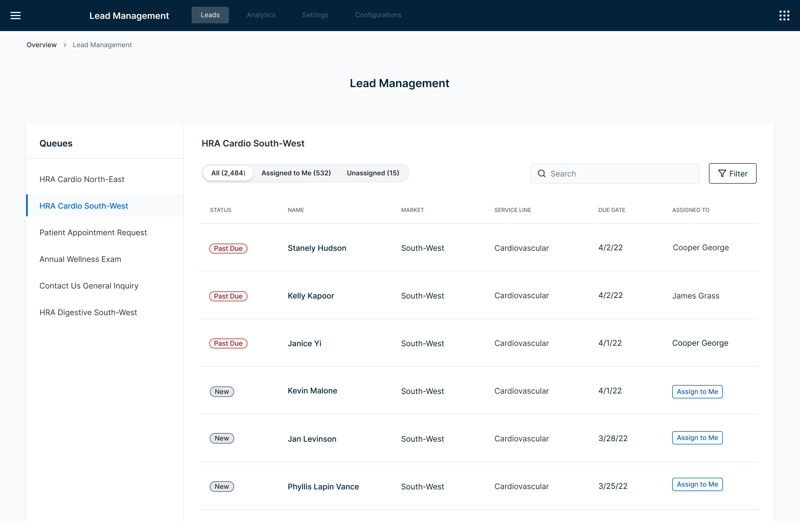
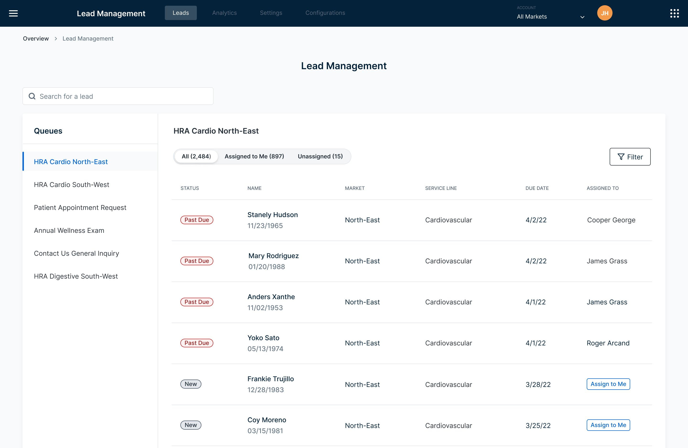
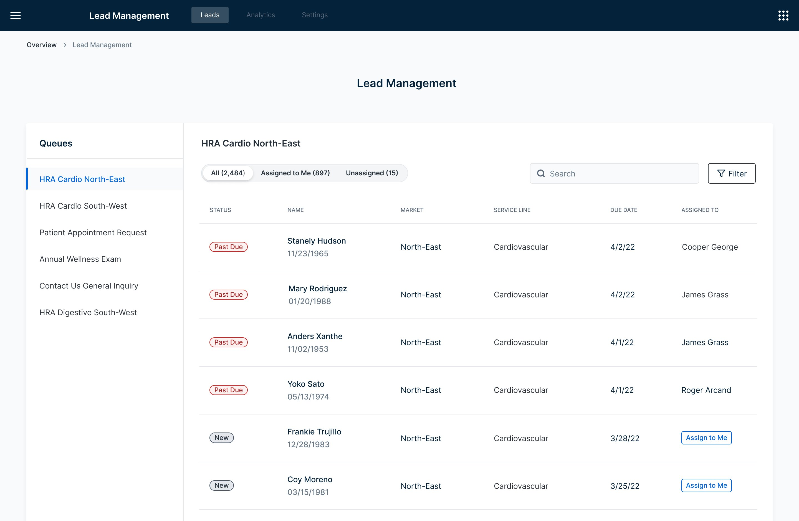
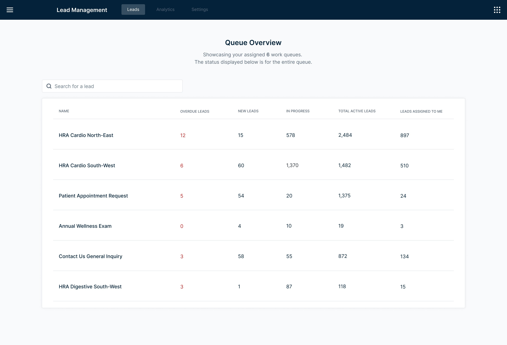

No direct user access. No clear requirements. Just a hard deadline and a client who needed something that didn't exist yet.
The Lead Management tool is an internal dashboard built to help call center agents manage incoming leads, categorized by Health Risk Assessment type, specialty, and market. Our team owned the platform agents used day-to-day.
A new client — Client C — needed to replace their existing lead management system, but had one hard requirement our current tool didn't support: multiple work queues. Meeting that requirement meant expanding the product in a meaningful way.
The significant constraint: we had no direct access to Client C's users. Requirements were filtered through our leadership team, and I was designing based on what they relayed — with limited ability to ask follow-up questions or validate assumptions in real time.
Design a multi-queue system that allows agents to be assigned to multiple work queues, switch between them easily, and manage their leads without losing context or wasting time navigating between views.
With no direct access to Client C's end users, I had to be resourceful. Requirements came through leadership — I worked with what they shared and filled the gaps with primary research.
I explored how work queues function across different industries: how they're structured, how agents navigate between them, and what patterns exist in tools designed for high-volume lead management. The goal was to build enough of a mental model to design confidently despite the unknowns.
To keep the design flexible and avoid building on faulty assumptions, I anchored my explorations around the questions that remained unanswered:
These questions didn't have answers yet — but they shaped every layout decision I made. Flexibility wasn't a nice-to-have. It was a design requirement.
I explored three distinct approaches for how agents would view and switch between multiple queues — each with a meaningfully different relationship between the queue list and the lead table.
A compact selector with multi-select capability — simple and familiar. But viewing multiple queues simultaneously created a tangled table experience, and the layout left little room to scale as the product grew.
A "my day" overview with tab-based queue switching. More visibility at a glance — but extra steps to open a queue, and with many queues assigned, the tab bar quickly became difficult to navigate.
A persistent side panel listing all assigned queues — always visible, one click to switch. Users stay oriented, the layout scales naturally, and it leaves the main lead table clean and focused.
The side nav won because it solved the orientation problem. With multiple queues in play, agents need to know exactly where they are and get somewhere else fast. A persistent list does that without adding steps.
I also explored how to handle the assignment filter within the side nav. Adding expandable titles introduced complexity that wasn't earning its place — so I simplified to pill filters, keeping the interaction light and the panel clean.

Expandable filter titles — too complex

Simplified to pill filters
Given the constraint of designing without direct user access throughout discovery, getting any usability testing at all was a win. We recruited five participants and focused the sessions on three core tasks: navigating the queue list, using the filters, and switching between queues.
Five participants is a small sample — but in usability testing, five is often enough to surface the most significant issues. And it did.
Usability testing with 5 participants — navigating queues, filters, and lead switching
Agents use name and DOB together to verify patient identity. We hadn't included DOB in the initial designs — this was a critical gap that required an immediate update to the table layout.
Agents reach for the search bar instinctively for almost every task — finding patients by name, filtering by status, locating a specific queue. Our initial design scoped search to within a single queue. Watching agents reach for it to find patients across queues made it clear: search needed to be global.
Moving between queues and using the filters was easy and intuitive. The side nav orientation held up under real task conditions — the core structure was validated.
The search finding was the most revealing. We watched an agent reach for the search bar immediately — not because our design prompted it, but because that's their default behavior. Designing around observed instincts is always more effective than designing around assumed workflows.
Search moved from queue-scoped to global — covering all queues, all patients, all statuses. Agents can search for anyone without knowing which queue they're in first. Matches the instinctive behavior we observed in testing.

Before — search field within selected queue only

After — search relocated outside queue to search across all
Date of birth now appears directly beneath the patient's name — the two pieces of information agents need together to verify a patient, kept together so they don't have to scan across the screen to find both.
Before — no date of birth visible

After — DOB displayed below patient name
A high-level view of all assigned queues on entry — giving agents immediate context before they dive into any individual queue. No hunting, no guessing which queue needs attention first.

Persistent list of all assigned queues in the side panel. One click to switch, always visible, never disruptive to the main lead table. Agents always know where they are.
Agents can assign leads to themselves, reassign to a colleague, or unassign — all from within the dashboard. Keeps the workflow contained without requiring separate tools or manual tracking.
The multi-queue dashboard shipped with the core requirements met: agents could be assigned to multiple queues, switch between them seamlessly, and manage their leads from a single, oriented interface. The usability testing changes — DOB placement and global search — meaningfully improved the experience before it reached users.
Five participants wasn't enough to call it done. A second round of testing was planned to validate further — particularly around queue prioritization and the assignment filter behavior.
Designing on assumptions isn't a failure state — it's a reality of product work. The discipline is in staying honest about what you don't know, building flexibility into decisions that could be wrong, and treating the first release as a hypothesis to be tested. Five usability participants changed two significant design decisions. Imagine what the second round revealed.